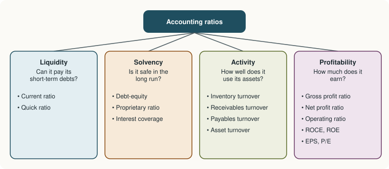

Chapter 13: Analysis of Financial Statements¶
Comparative and common-size statements, trends, and the main accounting ratios
Learning outcomes
After studying this chapter you should be able to:
- State the purpose of financial statement analysis and name its main tools.
- Prepare comparative and common-size statements and a simple trend analysis.
- Compute and interpret liquidity, solvency, activity and profitability ratios.
- Compute the working capital cycle and break return on equity into its parts.
- Explain the limitations of ratio analysis.
13.1 Why analyse financial statements¶
Financial statements are full of figures, but figures by themselves say little. Is a profit of ₹2,62,500 good? It depends on the size of the business, on what it earned last year, on what similar businesses earn, and on how much capital was needed to earn it. Financial statement analysis is the process of relating figures to one another, across years and across businesses, to judge the performance and position of an enterprise.
Different users look for different things (Chapter 1). A supplier asks whether the business can pay its bills next month (liquidity). A lender asks whether it can carry its debt and pay interest year after year (solvency). Managers ask how efficiently assets are used (activity). Owners and investors ask how much the business earns on their money (profitability).
The main tools are:
- comparative statements (horizontal analysis), which set the figures of two or more years side by side with the changes;
- common-size statements (vertical analysis), which express each item as a percentage of a total;
- trend analysis, which expresses each year's figures as an index of a base year;
- ratio analysis, which relates two figures that have a meaningful connection;
- cash flow analysis (Chapter 12).
Throughout this chapter the figures of one company, Meridian Ltd, are used.
Example 13.1 The data: Meridian Ltd
Statement of Profit and Loss for the year ended 31 March
| Particulars | 2026 (₹) | 2025 (₹) |
|---|---|---|
| Revenue from operations (all credit) | 20,00,000 | 16,00,000 |
| Less: Cost of goods sold | 12,00,000 | 10,00,000 |
| Gross profit | 8,00,000 | 6,00,000 |
| Less: Operating expenses | 4,00,000 | 3,20,000 |
| Operating profit (earnings before interest and tax, EBIT) | 4,00,000 | 2,80,000 |
| Less: Finance costs | 50,000 | 50,000 |
| Profit before tax | 3,50,000 | 2,30,000 |
| Less: Tax at 25% | 87,500 | 57,500 |
| Profit after tax | 2,62,500 | 1,72,500 |
Balance Sheet as at 31 March 2026
| Equity and liabilities | ₹ | Assets | ₹ |
|---|---|---|---|
| Equity share capital (1,00,000 shares of ₹10) | 10,00,000 | Property, plant and equipment | 14,00,000 |
| Reserves and surplus | 3,50,000 | Inventories | 3,00,000 |
| 10% Debentures | 5,00,000 | Trade receivables | 4,00,000 |
| Trade payables | 3,00,000 | Cash and cash equivalents | 1,50,000 |
| Other current liabilities | 1,50,000 | Prepaid expenses | 50,000 |
| Total | 23,00,000 | Total | 23,00,000 |
At 31 March 2025: inventories ₹2,00,000; trade receivables ₹3,00,000; trade payables ₹2,50,000. All purchases are on credit.
13.2 Comparative statements¶
A comparative statement shows the figures of two (or more) years side by side, with the absolute change and the percentage change:
Example 13.2 Comparative statement of profit and loss of Meridian Ltd
| Particulars | 2025 (₹) | 2026 (₹) | Change (₹) | Change (%) |
|---|---|---|---|---|
| Revenue from operations | 16,00,000 | 20,00,000 | 4,00,000 | 25.00 |
| Cost of goods sold | 10,00,000 | 12,00,000 | 2,00,000 | 20.00 |
| Gross profit | 6,00,000 | 8,00,000 | 2,00,000 | 33.33 |
| Operating expenses | 3,20,000 | 4,00,000 | 80,000 | 25.00 |
| Operating profit (EBIT) | 2,80,000 | 4,00,000 | 1,20,000 | 42.86 |
| Finance costs | 50,000 | 50,000 | 0 | 0.00 |
| Profit before tax | 2,30,000 | 3,50,000 | 1,20,000 | 52.17 |
| Tax | 57,500 | 87,500 | 30,000 | 52.17 |
| Profit after tax | 1,72,500 | 2,62,500 | 90,000 | 52.17 |
Reading. Revenue grew by 25%, but cost of goods sold grew by only 20%, so gross profit grew by a third. Operating expenses grew in step with revenue. Because finance costs did not change, the growth in operating profit was magnified further down: profit after tax rose by 52%. This magnifying effect of fixed costs is called leverage.
13.3 Common-size statements¶
A common-size statement expresses every item as a percentage of a common base: revenue from operations for the statement of profit and loss, and total assets (or total of equity and liabilities) for the balance sheet. It removes the effect of size, so that a company can be compared with a larger or smaller one, or with itself in years of different size.
Example 13.3 Common-size statement of profit and loss of Meridian Ltd
| Particulars | 2025 (% of revenue) | 2026 (% of revenue) |
|---|---|---|
| Revenue from operations | 100.00 | 100.00 |
| Cost of goods sold | 62.50 | 60.00 |
| Gross profit | 37.50 | 40.00 |
| Operating expenses | 20.00 | 20.00 |
| Operating profit (EBIT) | 17.50 | 20.00 |
| Finance costs | 3.13 | 2.50 |
| Profit before tax | 14.38 | 17.50 |
| Tax | 3.59 | 4.38 |
| Profit after tax | 10.78 | 13.13 |
(Percentages are rounded to two decimals; for 2025, 50,000 ÷ 16,00,000 = 3.125% and so on.)
Reading. Out of every ₹100 of revenue, the company kept ₹13.13 as profit after tax in 2026, against ₹10.78 in 2025. The improvement came from a lower cost of goods sold (62.5% to 60%) and from finance costs being spread over a larger revenue.
13.4 Trend analysis¶
For a longer run of years, each figure is expressed as an index of a base year, set at 100:
| Year ended 31 March | 2023 | 2024 | 2025 | 2026 |
|---|---|---|---|---|
| Revenue of Meridian Ltd (₹) | 12,00,000 | 13,80,000 | 16,00,000 | 20,00,000 |
| Trend index (2023 = 100) | 100.0 | 115.0 | 133.3 | 166.7 |
Table 13.1. Trend of revenue, with 2023 as the base year.
Revenue has grown every year, and the growth has accelerated: 15 points in the first year, about 18 in the second and about 33 in the third. A trend is most informative when related items are compared: if receivables were growing much faster than revenue, for example, it would suggest that credit control was weakening.
13.5 Ratio analysis¶
A ratio relates two figures that have a meaningful connection. It may be expressed as a pure ratio (2:1), as a percentage (40%), as a number of times (4.8 times) or as a number of days. Ratios are usually grouped into four families.

Caution
A ratio means nothing on its own. It must be compared: with the same business in earlier years, with other businesses in the same industry, or with a target. A current ratio of 2:1 may be comfortable for a manufacturer and excessive for a supermarket that sells for cash and turns its stock over every few days.
13.6 Liquidity ratios¶
Liquidity ratios measure the ability to meet short-term obligations as they fall due.
Current ratio
Meridian: current assets = 3,00,000 + 4,00,000 + 1,50,000 + 50,000 = ₹9,00,000; current liabilities = 3,00,000 + 1,50,000 = ₹4,50,000. Current ratio = 9,00,000 ÷ 4,50,000 = 2:1. A ratio of about 2:1 is often quoted as a rough benchmark for a manufacturing business; too low a ratio signals difficulty in paying debts, too high a ratio may mean idle funds.
Quick (liquid or acid-test) ratio
Inventories and prepaid expenses are excluded because they cannot quickly be turned into cash. Meridian: quick assets = 9,00,000 − 3,00,000 − 50,000 = ₹5,50,000. Quick ratio = 5,50,000 ÷ 4,50,000 = 1.22:1. A quick ratio of about 1:1 is often taken as satisfactory.
13.7 Solvency ratios¶
Solvency ratios measure the ability to meet long-term obligations and the balance between owners' funds and borrowed funds.
Debt-equity ratio
Meridian: shareholders' funds = 10,00,000 + 3,50,000 = ₹13,50,000; long-term debt = ₹5,00,000. Debt-equity = 5,00,000 ÷ 13,50,000 = 0.37:1. A low ratio means the business relies mainly on owners' funds and is safe for lenders; a high ratio means more risk, but also more leverage for the owners when business is good.
Proprietary ratio
Meridian: 13,50,000 ÷ 23,00,000 = 0.59 (59% of the assets are financed by the owners).
Interest coverage ratio
Meridian: 4,00,000 ÷ 50,000 = 8 times. Operating profit could fall to one-eighth of its present level before the company could not meet its interest from profit.
13.8 Activity (turnover) ratios¶
Activity ratios measure how efficiently the business uses its assets. Averages of opening and closing balances are used where both are available.
Inventory turnover ratio
Meridian: average inventory = (2,00,000 + 3,00,000) ÷ 2 = ₹2,50,000. Inventory turnover = 12,00,000 ÷ 2,50,000 = 4.8 times, so goods are held on average for 365 ÷ 4.8 = 76 days before being sold.
Trade receivables turnover ratio and average collection period
Meridian: average receivables = (3,00,000 + 4,00,000) ÷ 2 = ₹3,50,000. Turnover = 20,00,000 ÷ 3,50,000 = 5.71 times; collection period = 365 ÷ 5.714 = 64 days. If the company's credit terms are 45 days, customers are paying late.
Trade payables turnover ratio and average payment period
Credit purchases = cost of goods sold + closing inventory − opening inventory = 12,00,000 + 3,00,000 − 2,00,000 = ₹13,00,000. Average payables = (2,50,000 + 3,00,000) ÷ 2 = ₹2,75,000. Turnover = 13,00,000 ÷ 2,75,000 = 4.73 times; payment period = 365 ÷ 4.727 = 77 days.
Total asset turnover
Meridian: 20,00,000 ÷ 23,00,000 = 0.87 times: each rupee of assets generated 87 paise of revenue.
The working capital (operating) cycle¶
The time between paying for goods and receiving cash from customers is the working capital cycle:
Meridian: 76 + 64 − 77 = 63 days. For 63 days, on average, the company has paid for goods without yet being paid for them, and must finance that gap. Shortening the collection period would shorten the cycle and release cash.
13.9 Profitability ratios¶
Gross profit ratio
Meridian: 8,00,000 ÷ 20,00,000 × 100 = 40%.
Operating ratio and operating profit ratio
Meridian: (12,00,000 + 4,00,000) ÷ 20,00,000 × 100 = 80%. The operating profit ratio is the complement: 100 − 80 = 20% (4,00,000 ÷ 20,00,000).
Net profit ratio
Meridian: 2,62,500 ÷ 20,00,000 × 100 = 13.13%.
Return on capital employed (ROCE)
Capital employed = shareholders' funds + long-term debt = 13,50,000 + 5,00,000 = ₹18,50,000 (equivalently, total assets − current liabilities = 23,00,000 − 4,50,000). ROCE = 4,00,000 ÷ 18,50,000 × 100 = 21.62%. This is the return on all the long-term funds in the business, whoever provided them. Because it exceeds the 10% interest on the debentures, borrowing has increased the return to the shareholders.
Return on equity (ROE)
Meridian: 2,62,500 ÷ 13,50,000 × 100 = 19.44%.
Earnings per share (EPS) and price-earnings ratio
Meridian has no preference shares: EPS = 2,62,500 ÷ 1,00,000 = ₹2.625. If its shares were quoted at ₹31.50, the P/E ratio would be 31.50 ÷ 2.625 = 12 times: investors would be paying twelve rupees for each rupee of annual earnings.
Breaking down return on equity¶
Return on equity can be split into three ratios, a method often called the DuPont analysis:
The three factors are the net profit margin (profitability), the asset turnover (efficiency) and the equity multiplier (financial leverage). For Meridian: 13.125% × 0.8696 × 1.7037 = 19.44%, which agrees with the direct calculation. A company can raise its ROE by earning more on each sale, by using its assets harder, or by borrowing more; the breakdown shows which it is doing.
13.10 The ratios of Meridian Ltd at a glance¶
| Ratio | Formula | Meridian Ltd, 2026 |
|---|---|---|
| Current ratio | Current assets ÷ current liabilities | 2:1 |
| Quick ratio | Quick assets ÷ current liabilities | 1.22:1 |
| Debt-equity ratio | Long-term debt ÷ shareholders' funds | 0.37:1 |
| Proprietary ratio | Shareholders' funds ÷ total assets | 0.59 |
| Interest coverage | EBIT ÷ interest | 8 times |
| Inventory turnover | COGS ÷ average inventory | 4.8 times (76 days) |
| Receivables turnover | Credit revenue ÷ average receivables | 5.71 times (64 days) |
| Payables turnover | Credit purchases ÷ average payables | 4.73 times (77 days) |
| Asset turnover | Revenue ÷ total assets | 0.87 times |
| Gross profit ratio | Gross profit ÷ revenue | 40% |
| Operating ratio | (COGS + operating expenses) ÷ revenue | 80% |
| Net profit ratio | Profit after tax ÷ revenue | 13.13% |
| ROCE | EBIT ÷ capital employed | 21.62% |
| ROE | Profit after tax ÷ shareholders' funds | 19.44% |
| EPS | Earnings for equity ÷ number of equity shares | ₹2.625 |
Table 13.2. Summary of the ratios of Meridian Ltd.
Key idea
Read the ratios together, not one by one. Meridian Ltd is liquid (current ratio 2:1, quick ratio above 1), lightly geared (debt-equity 0.37) and comfortably able to pay interest (8 times). It is profitable and improving (net margin up from 10.78% to 13.13%, ROCE 21.6%). Its weak point is the collection of receivables (64 days), which lengthens its working capital cycle.
13.11 Limitations of ratio analysis¶
Ratios are powerful but must be used with care:
- They are only as good as the statements. Ratios inherit every estimate, choice of method and error in the accounts, and they can be affected by window dressing (Chapter 14).
- Historical cost. Assets at old costs make returns look higher in an old business than in a new one with the same performance.
- Different accounting policies (depreciation methods, inventory valuation) make comparisons between businesses less reliable.
- A balance sheet is a snapshot. Year-end balances may not be typical of the year, especially in a seasonal business.
- No absolute standards. Rules of thumb such as 2:1 are rough guides; what is normal varies by industry.
- Ratios ignore what is not in the accounts: the quality of management, the state of the market, technological change.
- Inflation distorts comparisons across years.
Ratios raise questions; they rarely answer them by themselves. Their proper use is to direct attention to the areas that need a closer look.
13.12 Summary¶
Summary
- Financial statement analysis relates figures across items, years and businesses. Its tools are comparative statements, common-size statements, trend analysis, ratios and cash flow analysis.
- Liquidity: current ratio (current assets ÷ current liabilities) and quick ratio (excluding inventories and prepaid expenses).
- Solvency: debt-equity ratio, proprietary ratio and interest coverage.
- Activity: inventory, receivables and payables turnover (and the corresponding days), asset turnover; the working capital cycle is inventory days + collection days − payment days.
- Profitability: gross profit ratio, operating ratio, net profit ratio, ROCE, ROE, EPS and P/E. ROE = net margin × asset turnover × equity multiplier.
- Ratios must be compared with the past, with other firms or with targets, and their limitations kept in mind.
13.13 Exercises¶
Exercise 1
Current assets are ₹6,00,000, of which inventories are ₹2,20,000 and prepaid expenses ₹20,000. Current liabilities are ₹3,00,000. Compute the current ratio and the quick ratio.
Answer
Current ratio = 6,00,000 ÷ 3,00,000 = 2:1. Quick assets = 6,00,000 − 2,20,000 − 20,000 = ₹3,60,000; quick ratio = 3,60,000 ÷ 3,00,000 = 1.2:1.
Exercise 2
Revenue ₹12,00,000; gross profit 25% of revenue; opening inventory ₹1,00,000; closing inventory ₹1,40,000. Find the inventory turnover ratio and the number of days' inventory held.
Answer
Cost of goods sold = 12,00,000 × 75% = ₹9,00,000. Average inventory = (1,00,000 + 1,40,000) ÷ 2 = ₹1,20,000. Turnover = 9,00,000 ÷ 1,20,000 = 7.5 times; days = 365 ÷ 7.5 = 48.7 days (about 49 days).
Exercise 3
A company's EBIT is ₹6,00,000, interest on 12% debentures is ₹1,20,000, tax is at 25%, and shareholders' funds are ₹20,00,000. Find the interest coverage ratio, the profit after tax, ROCE and ROE.
Answer
Interest coverage = 6,00,000 ÷ 1,20,000 = 5 times. Debentures = 1,20,000 ÷ 12% = ₹10,00,000. Profit before tax = 6,00,000 − 1,20,000 = 4,80,000; tax 1,20,000; profit after tax ₹3,60,000. Capital employed = 20,00,000 + 10,00,000 = ₹30,00,000; ROCE = 20%. ROE = 3,60,000 ÷ 20,00,000 = 18%.
Exercise 4
Credit sales for the year are ₹7,30,000; trade receivables were ₹90,000 at the start and ₹1,10,000 at the end. Find the receivables turnover and the average collection period. If the credit period allowed is 30 days, comment.
Answer
Average receivables = ₹1,00,000. Turnover = 7,30,000 ÷ 1,00,000 = 7.3 times; collection period = 365 ÷ 7.3 = 50 days. Customers take 50 days against 30 allowed: credit control needs attention.
Exercise 5
State the effect (increase, decrease, no change) on a current ratio of 2:1 of: (a) paying a creditor in cash; (b) buying inventory on credit; (c) selling a fixed asset for cash; (d) collecting cash from a debtor.
Answer
Take current assets 2,00,000 and current liabilities 1,00,000, and a transaction of ₹20,000. (a) 1,80,000 ÷ 80,000 = 2.25: increase. (b) 2,20,000 ÷ 1,20,000 = 1.83: decrease. (c) 2,20,000 ÷ 1,00,000 = 2.2: increase. (d) one current asset replaces another: no change. When the ratio is above 1, paying off a current liability with a current asset raises it, and adding equal amounts to both lowers it.
Exercise 6
Two companies each have ROE of 18%. Company P has a net margin of 6%, asset turnover of 2 and an equity multiplier of 1.5. Company Q has a net margin of 18%, asset turnover of 0.5 and an equity multiplier of 2. Verify the ROEs and contrast the two businesses.
Answer
P: 6% × 2 × 1.5 = 18%. Q: 18% × 0.5 × 2 = 18%. P earns thin margins on a high volume of sales with little borrowing, like a retailer; Q earns high margins on a large asset base and uses more debt, like a capital-intensive manufacturer. The same ROE hides very different businesses and risks.
13.14 Quiz¶
Check your understanding of Chapter 13
Exercise 1
The quick ratio excludes from current assets
- cash and bank
- inventories and prepaid expenses
- trade receivables
- short-term investments
Answer
inventories and prepaid expenses
Exercise 2
Revenue ₹10,00,000 and gross profit ₹2,50,000. What is the gross profit ratio, in per cent? (number only)
Answer
25 / 25%
Exercise 3
Which ratio measures long-term solvency?
- Current ratio
- Debt-equity ratio
- Inventory turnover
- Gross profit ratio
Answer
Debt-equity ratio
Exercise 4
Inventory days 60, collection days 45, payment days 40. What is the working capital cycle, in days?
Answer
65
Exercise 5
Capital employed is
- total assets
- shareholders' funds plus long-term debt
- current assets minus current liabilities
- share capital only
Answer
shareholders' funds plus long-term debt
Exercise 6
A common-size statement of profit and loss expresses each item as a percentage of
- total assets
- profit after tax
- revenue from operations
- the previous year's figure
Answer
revenue from operations
Exercise 7
Profit after tax ₹5,00,000; 2,00,000 equity shares; no preference shares. What is the EPS in rupees?
Answer
2.50 / 2.5 / ₹2.50